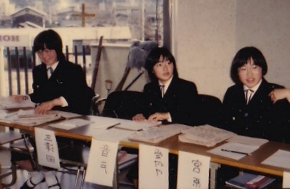
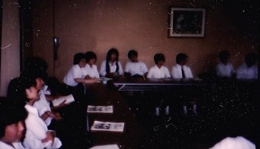
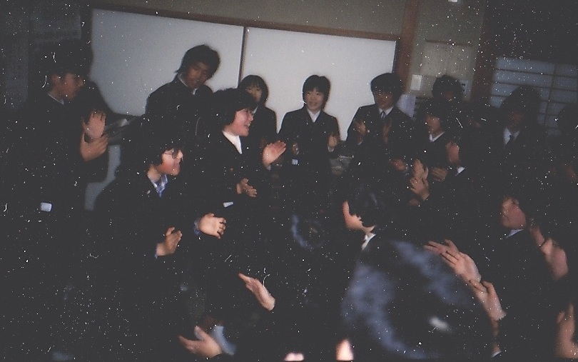
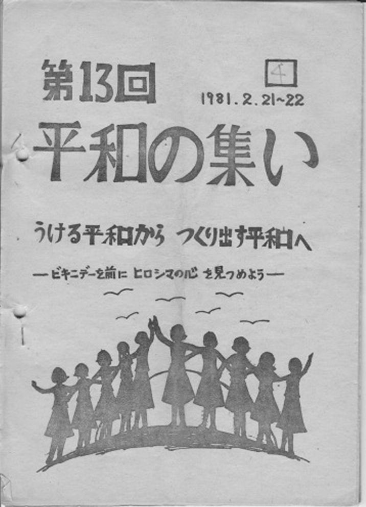
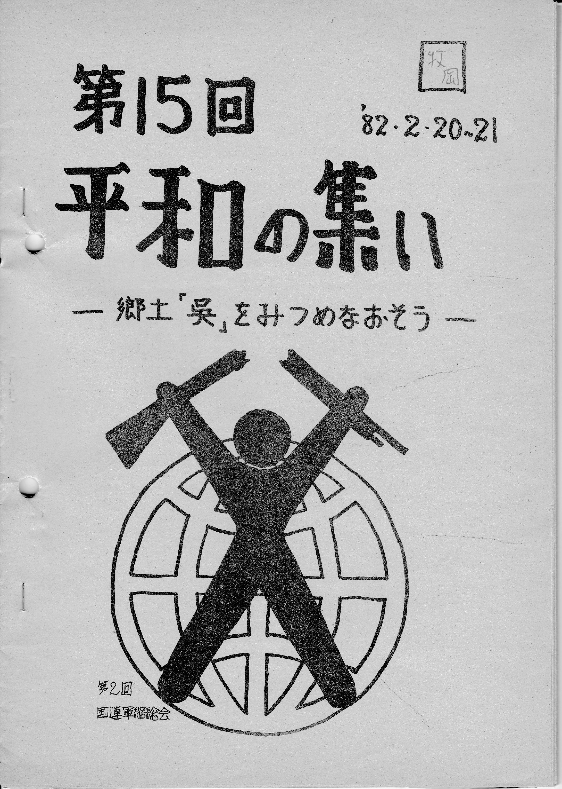
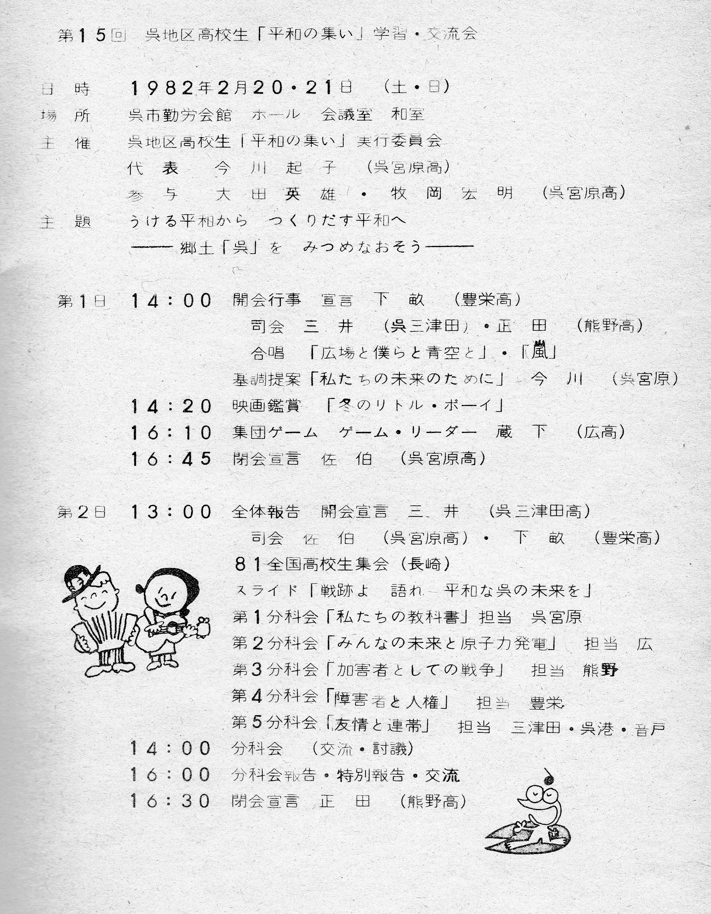
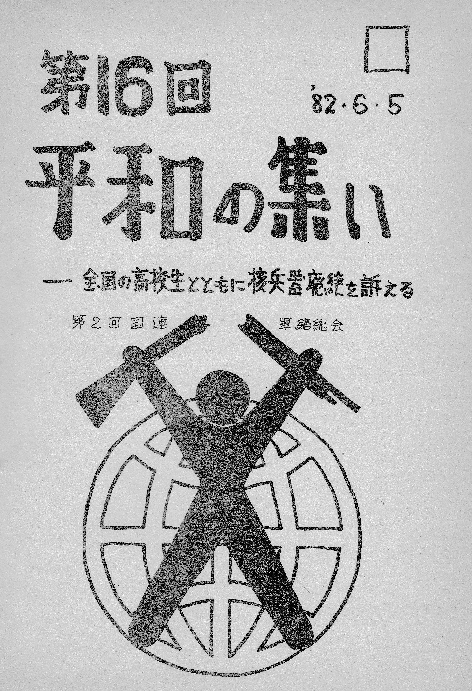
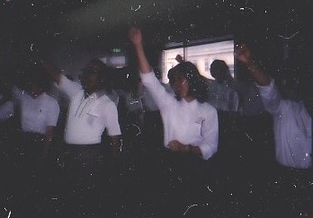
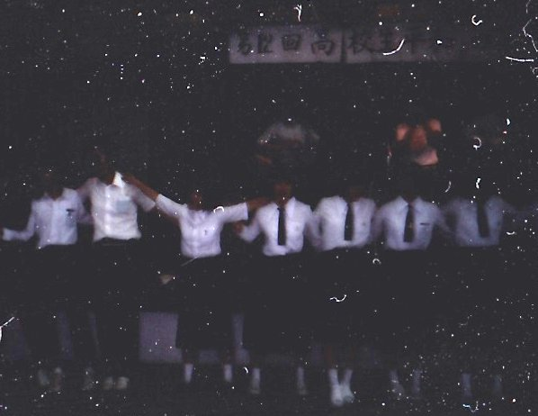

2.教育実践報告
「呉地区高校生平和の集い」のあゆみーその２－ 第11回～第17回
牧岡宏明（当時・広高校教諭、「集い」指導顧問）

第11回 80、2・16 呉勤労会館 200名
・世界情勢にも目を向けようという事で「今、世界で起こっていること」のテーマで
音戸高校の久留島先生の講演
・呉港高校の向井君の基調停案は感動を呼んだ。
・閉会行事での広高校藤本君のリードによるチクサクコールは、集いを引き締めた。


第12回 80、6・21 呉勤労会館 200名
・核兵器禁止を考えようの趣旨から、映画「広島・長崎1945年8月」鑑賞
・「核の恐怖」のテーマで広高校の大川先生の講演
・「今、若者たちに徴兵制の復活が」の広高校大川さんの基調提案は、素朴で率直力強く
訴えかけるものがあった。
・広高 藤本君のリードによる集団ゲームは、非常に感動的でホール せましと、
200の青春の熱気が爆発した。
第13回 81、2・21～22 呉勤労会館 延べ350名
この会は詳しい記録があったので、基調停案、講演、分科会の題目、実行委員の
感想や先生の感想で、生徒がどのような気持ちで参加し、成長したか見てほしい。
熱気に包まれた2日間、7年目を迎えた集いの特徴の一つは、初めて二日間開催に
挑戦したことです。
二つ目は、戦争体験の風化や右翼化 校内暴力が取りざたされる中で開催されたことです。
三つめは、熊野高校の生徒会執行部が、初めて実行委員会に加わり大活躍したことです。
四つ目に豊田高校、賀茂高校からの参加、原爆資料館館長高橋先生の講演もあり
呉在住の被爆者の方々の参加、校内暴力の解決に取り組んでいる中学校の保護者、
生徒、先生方、教師志望の青年、新聞テレビで集いを知った一般市民の参加があった
こと等、多くの収穫があった点です。
実行委員の努力も大変でしたが、感動も大きく、閉会式の最後歌の後、感極まって
泣き出した実行委員もいたほどでした。

13回平和の集いパンフ表紙
集いの準備
集いの準備２
基調提案
「ぶっつけよう若い力を」 実行委員長 中川和幸(呉港高校)
「受ける平和から作り出す平和へ」テーマに昭和50年2月、呉地区高校生平和の集いが
もたれて13回目を迎えます。
この平和の集いは呉地区の高校の先生方や生徒会などによって、学校での平和教育を
より深め、また各高校間の交流する場はないかと考えられました。
第5福竜丸が核実験のために死の灰をかぶったことがきっかけで平和運動の出発点に
なった、3月1日のビキニデーと7月1日の呉空襲記念日を前にして、平和の集いが年2回開かれることになりました。
今までは、戦争や原爆に関するものが中心だったのですが、今回は部落問題や
社会問題にも手を広げることになりました。
また集団ゲームや分科会を充実したものにという要望もあって、土・日の2日間
開かれることになりました。
だからこそ、この2日間に若い力をぶっつけて平和の在り方を深く理解し、また
お互いの心を通い合わせたいものです。
現在地球上には6万発の核兵器があるといわれています。
その威力は130万倍になるといわれています。
こういった中で僕たち高校生の役割が重要になってきています。
それに伴って、全国の高校生の平和への活動が増えており各地の高校生は
若い力を燃やしています。
ここで全国の活動をいくつか紹介します。
北海道 隠された自衛隊の調査
群馬県 街頭活動を中心に平和の尊さを訴える
広島県 平和ゼミナール等による平和の在り方の研究
沖縄県 米軍基地について
このように全国の高校生は、平和活動に若い力をぶっつけ大きく前進しています。
しかし、学校間の格差や受験戦争で仲間から離され孤立していく高校生が問題行動、
退廃に染まっていく高校生もいて、無気力、無関心、無責任、無作法、無感動、の
５無主義から無知、無神経を加えて7無主義とも言われています。
僕たち高校生は勉強したいし、若い力をぶっつける時間や場所が欲しいのです。
本当は誰でも真の仲間が欲しいのです。
誰でもみんな幸福な生活、平和な世界を望んでいるに違いないのです。
だから今回も資料を見て学習し、話し合い、次の世代の担い手として平和の尊さを
受け止めなければなりません。
そして、今回で学んだことを学校や、家庭に持ち帰り二度と悲惨な戦争を繰り返さず、
平和の在り方を理解し、お互いの心を通い合わせましょう。
そのためにもこの場で若い力をぶっつけようじゃないですか。
そうすれば真の平和が築かれていくのです。
最後に平和は来るものでなく、作り出していくものです。
・広島平和資料館館長 高橋昭博先生の講演――要旨「被爆体験とヒロシマの心」
はじめに
呉の高校生の皆さん、こんにちは。今、歌と基調提案を聞かせていただきましたが、
「受ける平和から作り出す平和へ」をテーマとして掲げていらっしゃる、
まさにそのとおりだと思います。
平和はあなた方一人一人の手によって作り出していくものです。
どんな大きなグループであっても最初は必ず一人です。
誰かが何らかの声を出す。何らかの行動を起こす。
やがて2人、3人、4人とその輪が広がって大きな輪になっていく。
1人の力は決して無力ではない。しかし1人でいてはだめです。
まず、あなたが声を出してから次から次へと声を大きくする。
先ほど素晴らしい歌声を聞かせていただきましたが、そんな歌が歌えなくなることが平和でなくなることです。
憲法が改正され、徴兵制がひかれるならば今のような歌は歌えなくなります。
そして、あなた方自身をあの忌まわしい30数年前の戦争の時代に立ち返らせてしまう
のです。
あなた方自身のそういう身近なところから声を出していきましょう。
加害者としての戦争
昭和6年の満州事変に始まり、やがて、シナ事変以降の中国との戦い、
そして昭和16年の真珠湾攻撃で始まる太平洋戦争までの15戦争の時代、私は中学生前後でした。
一切の自由もなく、来る日も来る日も敵を殺す練習ばかりでした。
この15年戦争は日本が起こした戦争です。そうした意味では私たち日本人は戦争の被害者であると同時に「加害者」なのです。
私たち大人はその責任を痛感しけないと思っています。
私は中学2年の時「被爆」しました。少年であり真相は知らされませんでした。
けれどもその戦時中を生きた人間の1人として、日本の責任を深く反省しています。
その反省の上に立って皆さんに語り掛けているのです。
原爆はなぜ投下されたか
一つは、当時の米大統領のトルーマンが言った「早期終結論」です。
戦争を早く終わらせるため、原爆を使用するしかなかった。原爆を使わなかったら、
もっと多くの連合国兵士の死者や負傷兵、あるいは民衆自体も大きな犠牲がでるであろうとの考え方です。
二つ目は、昭12月8日日本の真珠湾攻撃への報復であるといわれています。
確かに不意打ちで日本に非があります。
一方ではアメリカは攻撃があることは事前に知っていて、あえてやらした。
という説もありますが歴史学者は、やはり日本の不意打ちであるとの定説です。
三番目に、アメリカの対ソ戦略「アメリカがソ連に軍事的優位を保つ必要上投下した」の見方です。
(ソ連もドイツも日本も核分裂の研究をしていた) ここに、アメリカの政治的な目論見があったといわれ言います。
その大まかな3つの理由によって原爆は投下されたのです。
広島は軍事施設があって、周りに密集する家屋があるという条件に基づいて選ばれました。
つまり、軍事施設だけをねらったのではありません。
日本の真珠湾攻撃は、日本が悪いわけですが否定はしませんが、
最初から軍事施設だけを狙った日本の攻撃、
最初から民間施設をも狙った原爆の投下、ここに違いがあるのです。
その当時、広島には40万人の人が住んでいました。
昭和20年12月までに原爆による広島の死者は14万プラスマイナス1万の人たちがなくなっています。
その中には非戦闘員のほうが多いわけですから、アメリカにその責任があるといわざるを得ないのです。
よくアメリカでは「日本人原爆・原爆というけれどパールハーバーについてどう思っているのか」の問いに出会います。
私たち被爆者はこう思うのです。
原爆も真珠湾も忘れてはいけない。
忘れないで語り続けていかなければならない。
私たちは、原爆の悲惨さを乗り越え、皆さんのような若い人たちに、原爆の悲惨さ戦争の無意味なこと、平和の尊さを語り継いでいこうと思っています。
被爆者が「苦しかった、悲しかった」というところにとどまっているのではなく、
その気持ちを語り伝えていってこそ被爆者の訴えが感動を呼ぶのではないかと思います。
被爆の実相とヒロシマの心(一部略)
広島は都市の中心に投下されたことで被害が大きかった。
使用されたウラニウムは、1キログラムですが焼夷弾にしてみればB29、44機分です。
しかし焼夷弾には放射能はありません。
熱線については爆心地での温度は数百万度です。
爆風は半径15キロメートル、宮島にまで及んでいます。
そして放射能は現在に至るまで被爆者の体を蝕んでいます
私自身肝臓障害を起こしています。私のように後遺症で悩んでいる人は沢山います。
私は身体の四分の三をやけどし、寝たきりの一年半という月日を過ごしました。
わたしの同級生は60人いましたが生き残ったのは現在6人しかわかっていません。
資料館に同級生のくつや帽子があり、その前に立つと胸が詰まる思いです。
私の後ろには同級生や沢山の死んでいった方いるのだと思っていきています。
私は平和の原点は、人と人との触れ合いに思うのです。
人間の痛みが分かる心だと思います。
核兵器と現在の情勢(略)
高校生に贈る言葉 最後に三つの言葉を紹介します。
一つは中国の孟子の言葉です
。
孟子曰く「もし人が他人の身体を、自分の身体のように愛するならば、傷つけたり、殺したりできるだろうか。
もし人が他人の富を自分の富のように愛するならば、盗む人がいるだろうか。
もし指導者が他人の国を自分の国のように愛するならば、攻撃を仕掛けることがあるだろうか」
二番目は神奈川県の長洲知事の言葉「灯灯無尽」です。
この言葉の意味は、赤々と燃えているろうそくもいつかは燃え尽きて消え去る。
しかし、たとえ一本のろうそくでも、次の一本へともやし続けるならば、永遠に燃え尽きることはない。
親から、友から、先輩から受け継いだ私たちは、誰かの心に灯をつなげていこう。
一人だけ燃えているのではなく、誰かに伝えてください。
そして、また次へと大きな連帯の和を作ってください。
最後に詩人 坂村真民先生の詩です。
「二度とない人生だから」
二度とない人生だから 一輪の花にも無限の愛をそそいでいこう
一羽の鳥の声にも無心の耳を傾けよう
二度とない人生だから 一匹のこおろぎでも踏み殺さないようにこころしていこう
どんなにか喜ぶだろう
二度とない人生だから 一篇でも多く便りをしよう
返事は必ず書くことにしよう
二度とない人生だから まず身近なもの達に、できるだけのことはしよう
貧しいけれど、心豊かに接していこう
二度とない人生だから 露草の露にもめぐり合いの不思議を思い
足をとどめて見つめていこう
二度とない人生だから 昇る陽、沈む陽、丸い月、欠けていく月
四季それぞれの星・星の光に触れて
我が心を洗い清めていこう
二度とない人生だから 戦争のない世の実現に努力し
そういう詩を一篇でも多く作っていこう
私が死んだらあとを継いでくれる若い人たちのために
この大願を書き続けていこう
私の場合は、私自身の体験を語り継ぎ、核兵器の恐ろしさを訴え続けていきたいと思っています。
分科会の内容
第1分科会(宮原高校) 人権と同和教育 第2分科会(広高校) 自衛隊
第3分科会(熊野高校) 校内暴力 第4分科会(宮原高校) 人権と平和
第5分科会(宮原高校) 国際障害者年
参加生徒の感想
初めて実行委員をして 熊野高校生徒会 長塚富雄
生徒会長から、平和の集いの実行委員をやってみないかと言われ、初めてこの集いがあることを知りました。
その内容は1年生の私にとって、毎回200人くらい集まっていると聞いて、かたぐるしくマジメな会だと考えて、実行委員なんかできるかなと、不安だったが、実行委員会に
参加してみてこれならついていけるという気になりました。
この人たちは、こちこちの人間と違いユニークで個性的な人ばかりでした。
しかし、集いについて議論をすると目の色が違ってきて
「絶対に平和の集いを成功させるんだ」という熱意と意欲に燃える目でした。
1つの目的に向かって突き進もうとする若者の仲間意識とエネルギーを感じました。
初対面であっても、昔からの友達のように気軽に話が出来て、臆面もなく歌が歌えると
いう雰囲気に包まれました。
これが実行委員会に参加しての私の感想です。
私は、校内暴力の分科会の報告をする役になりました。
さて平和の集いの1日目は交流中心だったのでとても楽しかったです。
高橋先生の講演も感動しました。特に「この集いが開けていることこそ平和なのである」と「灯灯無尽」という言葉が心に残りました。
2日目は討議中心です。
私の担当の校内暴力の分科会に参加、自分なりによく事前に勉強していたつもりでしたが
みんなの話を聞いているうちに、自分の考えがまだまだ幼稚であることに気が付きました。
自分が意見を述べようとしても、本当に言いたいことが言葉に出ないのです。
自分の語彙の足りなさに失望し勉強が足りないと思いました。
明徳中学の女子生徒や広島の高校生の発言もあり大変盛り上がりました。
不安視していた全体会での分科会報告も無事終わりました。
平和の集いは感動、感動の連続でした私の人生の中でとても価値あるものになりました。
私は次の集いには、もっと勉強して、もっともっと有意義なものにしていきたいと思っています。
集いを終えての感想 宮原高教諭 牧岡(集いの副顧問)
第13回平和の集いは、2日間の討議を終えた勤労会館前の広場で、自然に沸き起こった実行委員20数名による団結踊りで幕を閉じた。
学校の枠を超えて、一つの事にこんなに打ち込んでいる高校生が、この平和の集いで生まれていることを、一人でも多くの人に知ってもらいたい。
今回は顧問の先生方の1日でやるしかない、という助言を振り切って、2日間じっくり話し合いたいという力強い声が沸き起こり、とうとう実現したのは嬉しい限りであった。
半年間、月1回土曜日の午後，友は家路に遊びにと学校を去っていく中、宮原高校に集まり実行委員会を開いた。
集いの流れ、司会の仕方、ゲームの仕方、分科会の在り方を徹底的に話し合ってきた。
そこで培われた企画力、実務能力は学校で習う勉強以上に、実行委員の血となり肉となったことであろう。
特筆すべきは、中川実行委員長が、朝のRCCの番組に電話インタビューを受けたことである。
その反響はいろんな人の参加が増えたことです。ただ、残念なのは校内暴力分科会のみが、クローズアップされて平和問題についての質問がなかった。
今回開会行事で、実行委員全員での群読が出来たことは大きな収穫であった。
皆が心を合わせ、声を大きく出さねばならない群読を、あれだけ短時間でやり切った
ことに敬意を表したい。
集団ゲームが充実し、次々と新しいリーダーが育っていることが喜ばしい。
自分を恥ずかしくもなく出し切れる仲間がいるという事は大切なことである。
今でも、あのお祭りコールの大きな声が聞こえてくるようです。
2日目の全体会で分科会への誘いの提案は、一人一人の文章力の確かさと、発表者の
堂々とした態度に感動した。
十分な準備と練習の賜物と思う。参加者にも深い感動を与えた。
今回も広島からの参加が多くあった。対外的な実践力は、まだまだ広島には及ばないが、集いの運営面では対等になったと自負している。
校内暴力の分科会に、今、悩んでいる中学校から生徒2人と、親3人が参加してくれて生々しい声が聞け、いっしょに考えることが出来た。
その1人の女子が「悪いことをしていても友達も先生も見て見ぬふりをしているのが一番情けない。
私はそんなの嫌だから注意することにしている」との発言に高校生も反省の機会を与えられたようだ。
参加した中学生の親が「こんな、素晴らしい高校生が呉地区にいるとは知らなかった。
ぜひ子供が高校に行くようになったら、こんな集会の仲間に入ってくれたらと思います。」との発言は参加者に勇気を与えてくれました。
平和の集いは華やかでないにしても、地道な行動は将来世の中を動かす一つの力になる
事でしょう。
「高校生は地域を変える。日本を変える。未来を変える。」の言葉をもう一度かみしめ、今生きているこの時充実したものに高校生と一緒に作り上げたい。
第14回 81、6・6 呉社会福祉会館 240名
・核積載艦の入港、核疑惑を反映しての広高校 竹下さんの鋭い基調提案
・映画「ヒロシマ」の鑑賞
・真剣な討議を行う。
第15回 82、2月20～21 呉勤労会館 延べ380名
・宮原高校今川さんの基調提案
・映画「冬のリトルボーイ」鑑賞
・広島原爆モニュメント、10フィート運動への募金を募り、
その募金を広島平和ゼミナールの代表者へ贈呈式を行う
・1月5日に実行委員と先生方で呉地区の戦跡フィールドワークを行う
・2日目は戦跡巡りの写真をもとに製作した「戦跡を語れ、平和な呉の未来を」の
スライドの上映
・原発、教科書、戦争責任、障害者、友情の5分科会で討論する
・多くのＯＧ、ＯＢと初参加の三原東高校の生徒の参加あり。
・感動の頂点の中、チクサクコールで閉会する

表紙

目次
レジメ
分科会報告１
分科会報告２
第16回 82、6・5 呉勤労会館 延べ310名
・熊野高校正田さんが初めて「全国高校生平和アピール」を踏まえた基調停案を行う
・初めての2部合唱「明日への伝言」を歌う
・映画「予言」の観賞
・第1次実行委員長 濱崎氏の参加もあり熱気にあふれた討論が出来た
・閉会後、多くの高校生が実行委員へ名乗り出た大会でした

表紙
レジメ
第17回 83、2・19～20 呉社会福祉会館・呉勤労会館 延べ320名


・きな臭い情勢を反映して映画「侵略」の観賞
・加害体験学習の集いとなった
・山口や広島市からの高校生の参加があった
・埼玉、大阪、兵庫、長崎、沖縄から連帯のメッセージも届いた
・閉会後ＯＢ会が組織された
レジメ
メッセージ
報道記事
「呉地区高校生平和の集い」のあゆみーその１－へ
「呉地区高校生平和の集い」のあゆみーその３－へ
トップページに戻る